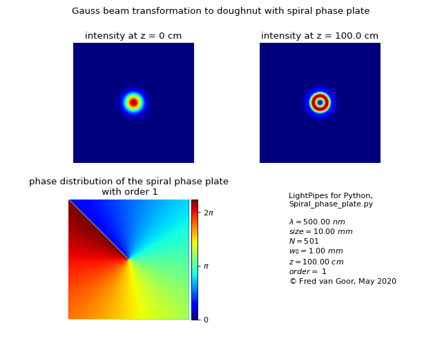

LightPipes for Python
2.1.5
1. Introduction.
2. Installation.
3. Support.
4. Command Reference.
5. User defined functions.
6. Manual.
7. Examples.
7.1. Interference examples.
7.2. Diffraction examples.
7.3. Non-diffracting Airy beams.
7.4. Non-diffractive Bessel beam.
7.5. Laser examples.
7.5.1. Hermite Gauss modes.
7.5.2. Laguerre Gauss modes.
7.5.3. Laguerre doughnut modes.
7.5.4. Laser simulation, stable laser resonator.
7.5.5. Unstable laser resonator.
7.5.6. Transformation of a fundamental Gauss mode into a doughnut mode with a spiral phase plate.
7.5.7. Transformation of high order Gauss modes.
7.5.8. Gauss TEM
00
mode described with geometric optics.
7.6. Phase recovery.
7.7. Zernike aberration.
7.8. Graded index media GRIN.
7.9. Fourier optics.
8. Computer practical.
9. Diaprojector (In Dutch).
Index
LightPipes for Python
7.
Examples.
7.5.6.
Transformation of a fundamental Gauss mode into a doughnut mode with a spiral phase plate.
View page source
7.5.6.
Transformation of a fundamental Gauss mode into a doughnut mode with a spiral phase plate.
(
Source
code
,
png
,
hires.png
,
pdf
)

{kind=link}
{kind=link}